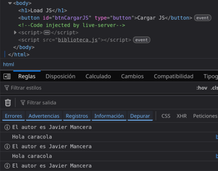

7b - Cargar JS dinámicamente
Más información sobre módulos:
- https://developer.mozilla.org/es/docs/Web/JavaScript/Guide/Modules
- https://acrossverse.me/stories/how-javascript-modules-work
Módulos en Javascript
Un módulo en Javascript es simplemente un fichero de código que será usado por otro fichero. Esta es el mecanismo moderno para dividir programas creados en Javascript en trozos que se pueden importar cuando sea necesario, de manera que el código pueda estar más organizado y ser más pequeño al poder cargar un módulo sólo cuando se vaya a usar de manera asíncrona.
Importante: necesitamos un servidor web para poder usar módulos y, además, un módulo sólo puede ser usado por otro módulo.
Modulos autónomos
Son módulos que contienen código que será ejecutado inmediatamente sin interactuar con el resto del código. Cuando sean importados, se ejecutarán, realizarán alguna tarea y devolverán el control al módulo que los cargó.
No existe un término estándar para refereirse a este tipo de módulo, por lo que también podrían llamarse módulos autocontenidos, autoejecutables, autónomos o simplemente módulos aislados.
Por ejemplo, supongamos que tenemos una web con un <input type="number" id="dato" value="79">. Esta web carga como módulo el fichero code.js que a su vez carga el módulo cuadrado.js:
Trozo del index.html (fíjate que se usa type="module" y no hay defer):
... <script type="module" src="code.js"></script> </head> <body> <h1>Carga dinámica</h1> <input type="number" name="dato" id="dato" value="79"> <button type="button" id="btnAccion">Acción</button> ...
Fichero code.js:
console.log("Probando las importaciones de un módulo autónomo");
alert("Bienvenido");
// importación del módulo cuadrado.js
import './cuadrado.js';
document.querySelector("#btnAccion").addEventListener("click", e=>{
console.log("Botón pulsado");
cuadrado(7);
});
Fichero de módulo cuadrado.js:
console.info("Módulo cargado correctamente");
const cuadrado = n => n*n;
const valor = document.querySelector("#dato").value;
console.log(`El cuadrado de ${valor} es ${cuadrado(valor)}`);
El resultado de la ejecución en la consola será el de la imagen de abajo:

Cosas a tener en cuenta:
- Desde el index.html se ha cargado el fichero code.js con <script type="module" src="code.js"></script>, porque un módulo sólo puede ser cargado desde otro módulo.
- El fichero code.js se carga sin usar el defer, este ya es el comportamiento por defecto de los módulos y no es necesario indicarlo.
- Aunque cargues varias veces el mismo módulo, sólo será cargado y ejecutado una única vez.
- El orden en el que se han ejecutado las operaciones no parece el intuitivo, primero se ha ejecutado el módulo y luego el resto del código. Esto es, sin embargo, el comportamiento esperado. En el parseado inicial del fichero code.js, el navegador importa el módulo y lo ejecuta inmediatamente antes de pasar a ejecutar el propio code.js. Este proceso es síncrono.
- Si pulsamos el botón, saldrá un error en la consola indicando que la función cuadrado() no está definida, esa función sólo existe en el módulo cuadrado.js
- Por todo esto el uso de este tipo de módulos está muy limitado, pero podría usarse por ejemplo para que al acceder a la página principal se realizase una petición a un servidor que devolviera los 5 productos de oferta de la semana y los mostrase en la página.
Módulos
Normalmente los módulos que vamos a utilizar no serán autónomos. Sino que se crearán para definir funciones o constantes que serán utilizados desde el fichero que los ha importado.
Por ejemplo, imagina este módulo definido en el fichero saludoModulo.js
export function saludo(nombre){
if(nombre)
saludoNombre(nombre);
else
saludoNombre("");
}
export function saludoCaracola(){
saludoNombre("caracola");
}
function saludoNombre(nombre){
alert("Hola " + nombre);
}
export const nombreAutor = "Javier Mancera";
La palabra clave export simplemente indica qué funciones serán utilizables desde fuera del módulo por el fichero que lo ha importado.
En lugar de indicar qué funciones o constantes se quieren exportar una a una, se puede indicar al final del módulo en una única instrucción export:
export { saludo, saludoCaracola, nombreAutor };
De una u otra forma, con export marcamos los componentes que queremos exportar desde nuestro módulo (no tenemos por qué exportar todo, podemos tener funciones auxiliares que no tienen por qué ser exportadas) y otro módulo podrá usarlo importándolo completo o importando sólo las funciones que le interese, por ejemplo:
Fichero code.js:
import {saludo, saludoCaracola} from './saludoModulo.js';
saludo();
saludo("Javier");
saludoCaracola();
Algunas cuestiones sobre los módulos:
- Los módulos importados de esta manera, serán evaluados inmediatamente, lo que habrá que tenerlo en cuenta para mejorar la experiencia del usuario.
- Los módulos siempre se ejecutan en modo estricto.
- Los módulos tiene su propio ámbito (scope), así que una variable definida globalmente en un módulo no se podrá usar en otro script a menos que sea exportada también (están aislados y encapsulan el código).
- Un módulo se evalúa una única vez aunque se intente cargar varias veces.
- Se ejecuta en diferido de la misma manera que un script cargado con defer.
- Los módulos necesitan un servidor para ser cargados.
- Un módulo exporta un objeto de exportación export { saludo, saludoCaracola, nombreAutor }; que es usado en la importación.
Por estas razones, muchas bibliotecas de funciones se distribuyen en forma de módulos.
Importar todo el módulo
Podemos importar todo el módulo en un objeto así:
import * as saludos from './saludoModulo.js'; saludos.saludo( saludos.nombreAutor );
Importar con alias
import { saludo, saludoCaracola as holaCaracola } from './saludoModulo.js';
holaCaracola();
saludo();
Export default
Podemos usar la palabra reservada default para definir una función o constante que se exportará por defecto.
Podemos tener varias exportaciones en un módulo, pero sólo una pueder ser la exportación por defecto.
function saludo(nombre){
alert("Hola, " + nombre);
}
export default saludo;
Y se usaría así (sin llaves):
import saludo from './saludoModulo.js';
saludo("Javier);
También se puede aprovechar que vamos a importar sólo la exportación por defecto para cambiarle el nombre a uno que nos guste más:
import hola from './saludoModulo.js';
hola("Javier);
También se pueden combinar exportaciones normales con una por defecto:
export function saludo(nombre){
if(nombre) saludoNombre(nombre);
else saludoNombre("");
}
export default function saludoCaracola(){ // exportación por defecto
saludoNombre("caracola");
}
function saludoNombre(nombre){
alert("Hola " + nombre);
}
export const nombreAutor = "Javier Mancera";
Y son cargadas por separado (además le cambiamos el nombre a la exportación por defecto):
import decirHola, {nombreAutor} from './saludoModulo.js';
decirHola();
alert(`El autor: ${nombreAutor}`);
Carga dinámica de un módulo
Los módulos son una manera conveniente de añadir funcionalida da una web, pero en cuanto al tiempo de carga de una web no se diferencia de los scripts cargados con defer.
Nota: Tal y como hemos estado usando los módulos hasta ahora simplemente son una buena manera de organizar el código evitando tener que añadir etiquetas <script> en el HTML. Si un fichero a.js necesita uno b.js para funcionar lo cargamos desde a.js y no desde el HTML, así si dejamos de usar la biblioteca a.js no tendremos que eliminar del <head> las etiquetas <script> de a.js y b.js (podríamos olvidar eliminar b.js y seguiríamos cargándolo aunque ya no lo usásemos).
Imaginemos que en nuestra web se muestra un conjunto de datos, por ejemplo una factura o las notas de unos alumnos, también tenemos un botón para convertir los datos a PDF y otro para crear una hoja de cálculo con los datos. Según las estadísticas de uso de la aplicación, los datos sólo se convierten a PDF una de cada veinte veces que se muestran. Y a una hoja de cálculo sólo una de cada cuarenta veces que se muestran. Además, rara vez se usan las dos funcionalidades en la misma sesión.
Tenemos un módulo o script que usamos para crear un PDF y otro que usamos para crear una hoja de cálculo. ¿Tiene sentido cargar estos scripts siempre aunque el usuario no los use? ¿Y sobre todo cargar los dos módulos aunque sólo se usará uno, si es que se llegan a usar? Probablemente no, estamos cargando bibliotecas pesadas y empeorando la experiencia normal del usuario por si acaso el usuario lo necesitase.
Una alternativa es cargar estos módulos dinámicamente cuando se pulse un botón de exportar a PDF o a Hoja de cálculo. Al ser módulos, la primera vez que se pulsen se realizará la carga del módulo, la segunda vez el sistema reconocerá que ya están cargados y no volverá a realizar la petición.
La carga dinámica de un módulo podría crearse usando el código de abajo. Se consigue usando la función import(ficheroModulo). Esto cargará el módulo completo cuando se ejecute y devuelve una promesa.
Fichero code.js:
const divResultado = document.querySelector("#divResultado");
document.querySelector("#btnAccion").addEventListener("click", async e=>{
try{
let moduloSaludo = await import("./saludoModulo.js");
moduloSaludo.saludo();
}
catch(error){
divResultado.innerHTML = error +" Error al cargar la biblioteca";
}
});
Nota: El fichero code.js ahora no necesita ser un módulo.
El problema con la exportación por defecto
Si recuerdas, en el módulo saludoModulo.js definíamos una función con export default function saludoCaracola(). A la hora de utilizarlo habrá que tenerlo en cuenta, porque esa funcion se exportará con el nombre de default y no como saludoCaracola.
Un ejemplo de uso sería el de abajo importando el módulo en un objeto moduloSaludo (fíjate que se usa moduloSaludo.default()):
document.querySelector("#btnAccion").addEventListener("click", async e=>{
try{
const moduloSaludo = await import("./saludoModulo.js");
moduloSaludo.saludo();
moduloSaludo.default(); // la función que se exporta por defecto
console.log(moduloSaludo.nombreAutor);
}
catch(error){
divResultado.innerHTML = error +"<p>Error al cargar la biblioteca</p>";
}
});
Otra manera sería la de abajo, usando una descomposición del objeto de exportación, el único problema es que la función por defecto se importaría como default, pero esta es una palabra reservada del lenguaje, por lo que se renombra con default:holaCaracola:
document.querySelector("#btnAccion").addEventListener("click", async e=>{
try{
const {saludo, default:holaCaracola, nombreAutor} = await import("./saludoModulo.js");
saludo();
holaCaracola();
console.log(nombreAutor);
}
catch(error){
divResultado.innerHTML = error +"<p>Error al cargar la biblioteca</p>";
}
});
Carga dinámica de un script
Si por alguna razón no queremos utilizar módulos (o no podemos por tener que dar soporte a navegadores antiguos o por ser una biblioteca que no usa módulos), también podemos realizar la carga dinámica de ficheros javascript usando métodos algo más silvestres.
Nota: algunas build tools como Vite pueden transpilar el código de los módulos en único fichero que navegadores antiguos pueden utilizar. Frameworks como React o Vue también lo hacen.
Supongamos que necesitamos cargar el código que está en el fichero biblioteca.js:
"use strict";
function saludo(){
console.log("Hola caracola");
}
const autor = "Javier Mancera";
Fichero code.js con carga dinámica del fichero biblioteca.js:
"use strict";
const cargarJS = (url , bibliotecaCargada) => {
return new Promise( (resolve, reject) =>{
// Comprobar si la biblioteca ya está cargada
if (bibliotecaCargada) {
resolve();
} else {
// Crear el elemento script
var script = document.createElement('script');
// Asignar la URL de la biblioteca SheetJS al atributo src del elemento script
script.src = url;
// Añadir un evento load que resuelve la promesa cuando la biblioteca está cargada
script.addEventListener('load', resolve);
script.addEventListener('error', reject);
// Añadir el elemento script al documento
document.body.appendChild(script);
}
});
}
// Variable cerrojo para saber si se cargó o no la biblioteca
let bibliotecaSaludoCargada = false;
document.querySelector("#btnCargarJS").addEventListener("click", async e=>{
try{
await cargarJS("biblioteca.js", bibliotecaSaludoCargada );
saludo();
console.info("El autor es "+ autor);
bibliotecaSaludoCargada = true;
}
catch(error){
console.error("Error al cargar la biblioteca");
}
});
Fíjate que el script code.js no tiene que ser un módulo (por eso colocamos el use strict) y que aunque se pulse varias veces el botón de carga, no se añaden varias copias del fichero biblioteca.js al <body>.

Tarea de ampliación: en el código de arriba, es tarea del eventListener el llevar el control de si la biblioteca fue cargada mediante una variable cerrojo (bibliotecaSaludoCargada). ¿Cómo podrías hacer que fuera la función cargarJS() la que llevara el control?
Abajo puedes ver una pista para el ejercicio. Piénsalo antes de pulsar el botón.
Ejercicios
Ejercicio 7b-1: Crea una web que contenga un <input type="number" id="temperatura">, un botón y una división de resultado. Cuando se pulse el botón cargará dinámicamente un módulo que contendrá tres funciones, usará las funciones con el dato que el usuario haya escrito en el <input> e imprimirá el resultado en la división.
Las tres funciones del módulo serán las siguientes:
- celsiusAFahrenheit(temperatura)
- fahrenheitACelsius(temperatura)
- celsiusAKelvin(temperatura)
Ejercicio 7b-2: Utiliza la biblioteca https://cdn.jsdelivr.net/npm/canvas-confetti@1.9.3/dist/confetti.browser.min.js para que ejecutar la función fireConfetti cuando se pulse un botón. Abajo hay un trozo de código que lo usa, pero no tiene por qué ser eficiente, fíjate que se carga siempre. ¿Cómo podemos modificarlo para que la biblioteca de confetti se cargue sólo cuando se ha pulsado el botón?
import('https://cdn.jsdelivr.net/npm/canvas-confetti@1.9.3/dist/confetti.browser.min.js');
function fireConfetti(event) {
const x = event.clientX / document.body.clientWidth;
const y = event.clientY / document.body.clientHeight;
confetti({origin: {x, y}});
}
document.querySelector("#btnAccion").addEventListener("click", async e=>{
fireConfetti(e); // ¡Fire Confetti! 🎉
});
Nota: esta biblioteca está preparada para ser consumida como módulo, pero sus funciones, como confetti(), se convierten en funciones globales.
Ejercicio 7b-3: Otro ejemplo de biblioteca simpática es Rough Notation (https://roughnotation.com/). ¿Puedes leer la documentación y usarla de manera que cuando se pulse sobre el botón se cargue la biblioteca y cree un rectángulo alrededor del propio botón?
Posible solución: Intenta leer la documentación para resolver el ejercicio.
Ejercicio 7b-4: Intenta utilizar dinámicamente la biblioteca https://sweetalert2.github.io/ para mostrar diálogos y notificaciones.

Ejercicio avanzado 7b-5: Para almacenar información de manera permanente en el cliente podemos usar cookies o localStorage, pero también existe la opción estándar IndexedDB, que permite usar una base de datos no relacional directamente desde el navegador y sin las limitaciones de tamaño de localStorage. Lamentablemente su uso es bastante complejo, pero podemos ayudarnos de librerías como Dexie (https://github.com/dexie/Dexie.js?tab=readme-ov-file).
El objetivo de este ejercicio es usar Dexie para almacenar una lista de asignaturas (id, nombre, dificultad).
Ejercicio avanzado 7b-6: Usa Zod (https://zod.dev/) para validar formularios.
document.querySelector("#btnAccion").addEventListener("click", async e=>{
try {
// Apuntamos a la versión 4
const { z } = await import('https://cdn.jsdelivr.net/npm/zod@4/+esm');
const PerroSchema = z.object({
nombre: z.string().min(3, "El nombre es muy corto"),
email: z.string().email(),
edad: z.number().min(0).max(20),
esBueno: z.boolean()
});
const datosDelUsuario = {
nombre: "Aria",
email: "aria@guau.com",
edad: 3,
esBueno: true
};
const validacion = PerroSchema.safeParse(datosDelUsuario);
if (validacion.success) {
console.log("✅ Datos correctos:", validacion.data);
alert("¡Perro validado correctamente!");
} else {
console.error("❌ Errores de validación:", validacion.error.format());
alert("Los datos del perro no son válidos.");
}
} catch (error) {
console.error("No se pudo cargar Zod 4", error);
}
});
Ejemplo de uso 7b-7: Swappy (https://swapy.tahazsh.com/) es una biblioteca que permite crear interfaces drag & drop con unas pocas líneas de código.
JS (cargado como módulo):
const container = document.querySelector(".container");
await import ("https://unpkg.com/swapy/dist/swapy.min.js")
const swapy = Swapy.createSwapy(container)
HTML:
<div class="container"> <div class="section-1" data-swapy-slot="foo"> <div class="content-a" data-swapy-item="a"> <!-- Your content for content-a goes here --> <p>Javier Mancera</p> </div> </div> <div class="section-2" data-swapy-slot="bar"> <div class="content-b" data-swapy-item="b"> <!-- Your content for content-b goes here --> <div class="handle" data-swapy-handle>👇🏼</div> <p>Este se arrastra con la mano.</p> <ul> <li>Gato</li> <li>Zorro</li> <li>Caballo</li> <li>Gallo</li> <li>Perro</li> <li>Vaca</li> </ul> </div> </div> <div class="section-3" data-swapy-slot="baz"> <div class="content-c" data-swapy-item="c"> <!-- Your content for content-c goes here --> <p>Hola caracola</p> </div> </div> </div>
CSS:
.container{
display: grid; grid-template-columns: 1fr 1fr;
gap: 1rem;
}
.container > div{
border: 2px solid white;
cursor: pointer;
color: white;
background-color: rgb(72, 45, 133);
min-height: 7rem;
display:grid;
place-content: center;
user-select: none;
}
.container > div:nth-child(2){
background-color: rgb(100, 28, 74);
}
.container > div:nth-child(3){
background-color: navy;
}